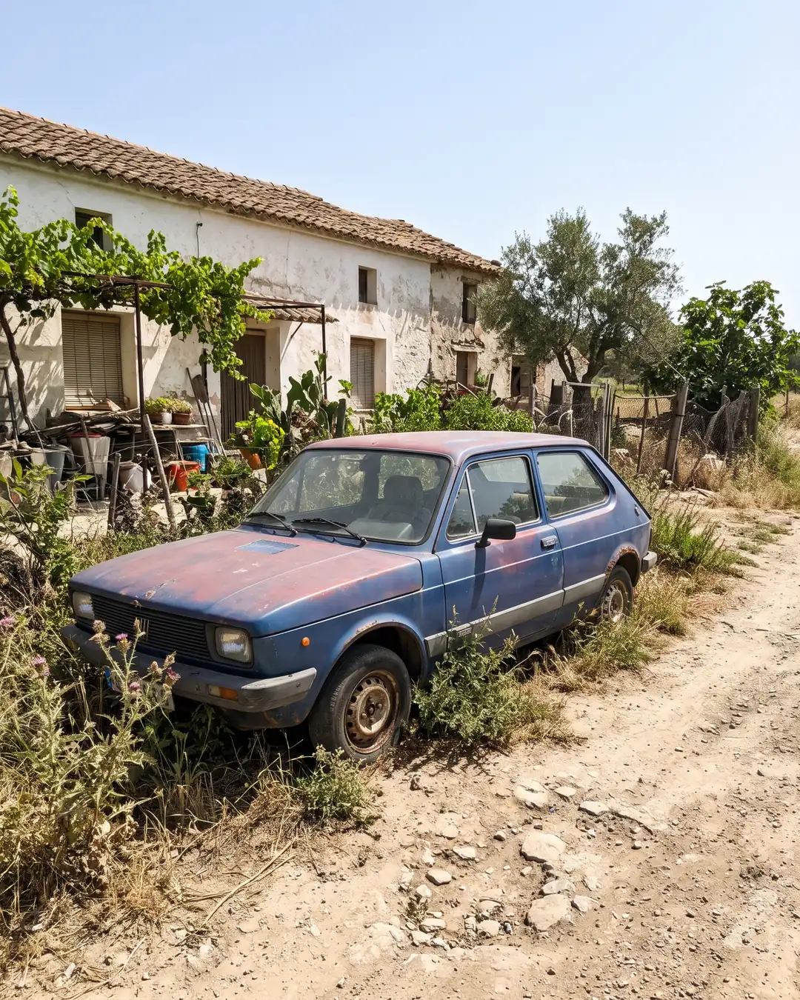
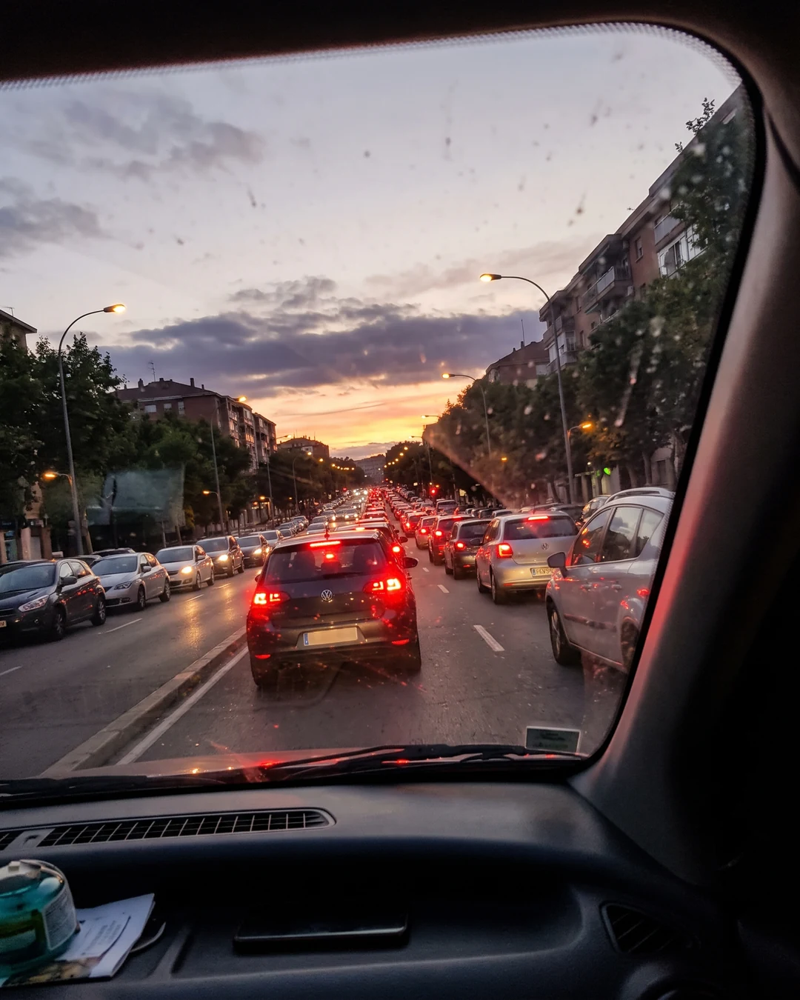
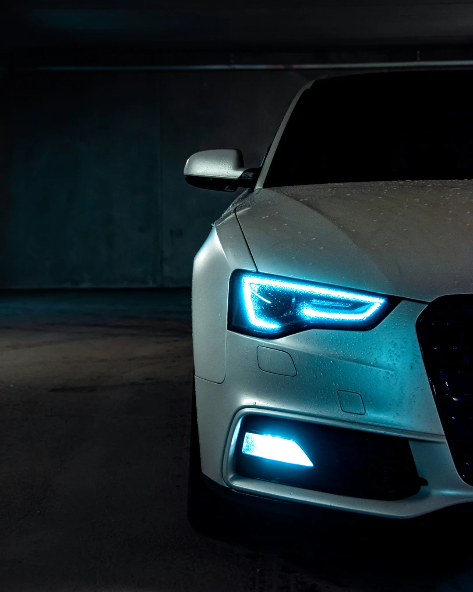
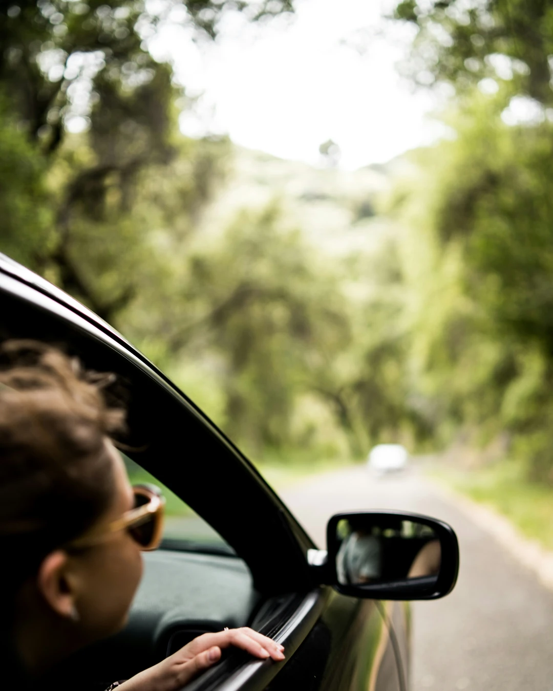
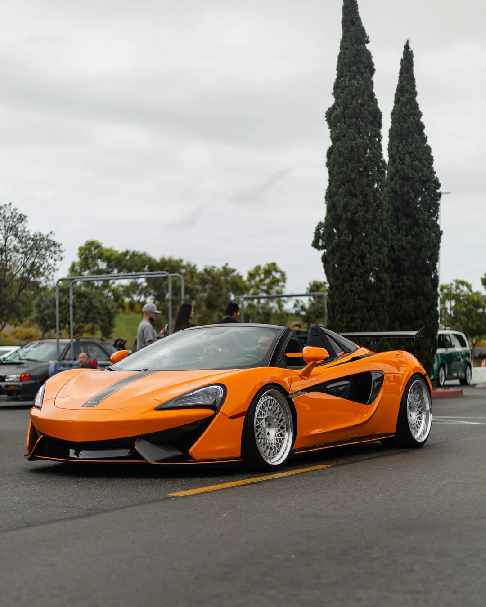

Caso n.º 9 · Coches
Imágenes
-

IA
La confesión del sospechoso
Un coche antiguo y descolorido aparcado en un camino de tierra junto a una casa de campo, con hierbas crecidas alrededor de las ruedas; luz dura de mediodía.
-

IA
La confesión del sospechoso
Atasco en una avenida al atardecer, visto desde el asiento del copiloto a través del parabrisas, con las luces de freno de los coches de delante y un poco de reflejo del salpicadero en el cristal.
-

REAL
Fotografía real
-

REAL
Fotografía real
-

REAL
Fotografía real
¿Dato o Bulo?
-
BULO «El coche más largo del mundo es una limusina de algo más de 40 metros.»
El récord es «The American Dream», una limusina de 30,54 m construida en Estados Unidos en 1986 y restaurada en 2022.
- Tiene 26 ruedas, cama de agua, jacuzzi e incluso un helipuerto.
- Se queda a casi 10 metros de esa cifra.
-
BULO «El coche más caro jamás vendido alcanzó un precio de 300 millones de euros.»
El más caro es un Mercedes-Benz 300 SLR Uhlenhaut Coupé de 1955, vendido en 2022 por 135 millones de euros.
- Se subastó en privado, con RM Sotheby's, en el Museo Mercedes-Benz de Stuttgart.
- Es menos de la mitad de 300 millones.
-
DATO «El récord absoluto de velocidad en tierra se estableció en octubre de 1997.»
El 15 de octubre de 1997, Andy Green alcanzó 1.227,98 km/h con el ThrustSSC en el desierto de Black Rock (Nevada).
- Es el único vehículo terrestre que superó oficialmente la barrera del sonido.
-
DATO «La primera multa por exceso de velocidad de la historia fue por circular a solo 13 km/h.»
En 1896, Walter Arnold fue multado en Kent (Inglaterra) por ir a unos 13 km/h donde el límite era de 3,2 km/h.
- El policía tuvo que perseguirlo en bicicleta.
-
DATO «El récord de kilómetros recorridos por un solo vehículo comercial supera los 5 millones.»
El estadounidense Irv Gordon superó los 5,15 millones de km con su Volvo 1800S, comprado nuevo en 1966.
- Equivale a dar la vuelta al mundo más de 120 veces.
- Lo logró antes de su fallecimiento, en 2018.